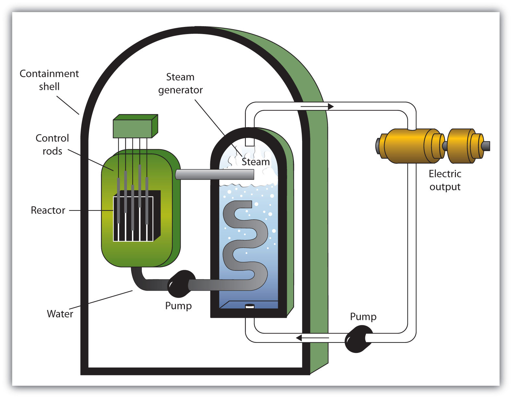

Nuclear changes occur with a simultaneous release of energy. Where does this energy come from? If we could precisely measure the masses of the reactants and products of a nuclear reaction, we would notice that the amount of mass drops slightly in the conversion from reactants to products. Consider the following nuclear equation, in which the molar mass of each species is indicated to four decimal places:
If we compare the mass of the reactant (235.0439) to the masses of the products (sum = 234.8605), we notice a mass difference of −0.1834 g, or −0.0001834 kg. Where did this mass go?
According to Albert Einstein’s theory of relativity, energy (E) and mass (m) are related by the following equation:
E = mc2where c is the speed of light, or 3.00 × 108 m/s. In the course of the chemical reaction for uranium, the mass difference is converted to energy, which is given off by the reaction:
E = (−0.0001834 kg)(3.00 × 108 m/s)2 = −1.65 × 1013 J = −1.65 × 1010 kJ(For the units to work out, mass must be expressed in units of kilograms.) That is, 16.5 billion kJ of energy is given off every time 1 mol of uranium-235 undergoes this nuclear reaction. This is an extraordinary amount of energy. Compare it to combustion reactions of hydrocarbons, which give off about 650 kJ/mol of energy for every CH2 unit in the hydrocarbon—on the order of hundreds of kilojoules per mole. Nuclear reactions give off billions of kilojoules per mole.
If this energy could be properly harvested, it would be a significant source of energy for our society. Nuclear energyThe controlled harvesting of energy from fission reactions. involves the controlled harvesting of energy from fission reactions. The reaction can be controlled because the fission of uranium-235 (and a few other isotopes, such as plutonium-239) can be artificially initiated by injecting a neutron into a uranium nucleus. The overall nuclear equation, with energy included as a product, is then as follows:
235U + 1n → 139Ba + 94Kr + 31n + energyThus by the careful addition of extra neutrons into a sample of uranium, we can control the fission process and obtain energy that can be used for other purposes. (Artificial or induced radioactivity, in which neutrons are injected into a sample of matter that subsequently cause fission, was first demonstrated in 1934 by Irène Joliot-Curie and Frédéric Joliot, the daughter and son-in-law of Marie Curie.)
Plutonium-239 can absorb a neutron and undergo a fission reaction to make an atom of gold-204 and an atom of phosphorus-31. Write the balanced nuclear equation for the process and determine the number of neutrons given off as part of the reaction.
Solution
Using the data given, we can write the following initial equation:
In balanced nuclear equations, the sums of the subscripts on each side of the equation are the same, as are the sums of the superscripts. The subscripts are already balanced: 0 + 94 = 94 and 79 + 15 = 94. The superscripts on the left equal 240 (1 + 239) but equal 235 (204 + 31) on the right. We need five more mass number units on the right. Five neutrons should be products of the process for the mass numbers to balance. (Because the atomic number of a neutron is zero, including five neutrons on the right does not change the overall sum of the subscripts.) Thus the balanced nuclear equation is as follows:
We predict that the overall process will give off five neutrons.
Test Yourself
Uranium-238 can absorb a neutron and undergo a fission reaction to produce an atom of cesium-135 and an atom of rubidium-96. Write the balanced nuclear equation for the process and determine the number of neutrons given off as part of the reaction.
Answer
eight neutrons
One balanced nuclear reaction for the fission of plutonium-239 is as follows:
The molar mass in grams of each species is given for each particle. What is the energy change of this fission reaction?
Solution
We start by adding the masses of all species on each side of the nuclear equation. Then we determine the difference in mass as the reaction proceeds and convert this to an equivalent amount of energy. The total mass of the reactants is as follows:
1.0087 + 239.0522 = 240.0609 gThe total mass of the products is as follows:
203.9777 + 30.9738 + (5 × 1.0087) = 239.9950 gThe change is mass is determined by subtracting the mass of the reactants from the mass of the products:
change in mass = 239.9950 − 240.0609 = −0.0659 gThis mass change must be converted into kilogram units:
Now we can use Einstein’s equation to determine the energy change of the nuclear reaction:
E = (−0.0000659 kg)(3.00 × 108 m/s)2 = −5.93 × 1012 JThis is almost 6 trillion joules given off.
Test Yourself
The nuclear equation for the fission of uranium-238 is as follows:
The molar mass in grams of each species is given for each particle. What is the energy change of this fission reaction?
Answer
−1.35 × 1013 J
A nuclear reactorAn apparatus designed to carefully control the progress of a nuclear reaction and extract the resulting energy for useful purposes. is an apparatus designed to carefully control the progress of a nuclear reaction and extract the resulting energy for useful purposes. Figure 15.5 "A Diagram of a Nuclear Power Plant for Generating Electricity" shows a simplified diagram of a nuclear reactor. The energy from the controlled nuclear reaction converts water into high-pressure steam, which is used to run turbines that generate electricity.
Figure 15.5 A Diagram of a Nuclear Power Plant for Generating Electricity
The two main components of the power plant are the nuclear reactor itself and the steam-driven turbine and electricity generator.
Although the fission of large nuclei can produce different products, on average the fission of uranium produces two more free neutrons than were present to begin with. These neutrons can themselves stimulate other uranium nuclei to undergo fission, releasing yet more energy and even more neutrons, which can in turn induce even more uranium fission. A single neutron can thus begin a process that grows exponentially in a phenomenon called a chain reactionAn exponential growth in a phenomenon.:
1 → 2 → 4 → 8 → 16 → 32 → 64 → 128 → 256 → 512 → 1,024 → 2,048 → 4,096 → 8,192 → 16,384 →…Because energy is produced with each fission event, energy is also produced exponentially and in an uncontrolled fashion. The quick production of energy creates an explosion. This is the mechanism behind the atomic bombA weapon that depends on a nuclear chain reaction to generate immense forces.. (The first controlled chain reaction was achieved on December 2, 1942, in an experiment supervised by Enrico Fermi in a laboratory underneath the football stadium at the University of Chicago.)
Although fairly simple in theory, an atomic bomb is difficult to produce, in part because uranium-235, the isotope that undergoes fission, makes up only 0.7% of natural uranium; the rest is mostly uranium-238, which does not undergo fission. (Remember that the radioactive process that a nucleus undergoes is characteristic of the isotope.) To make uranium useful for nuclear reactors, the uranium in uranium-235 must be enriched to about 3%. The enrichment of uranium is a laborious and costly series of physical and chemical separations. To be useful in an atomic bomb, uranium must be enriched to 70% or more. At lesser concentrations, the chain reaction cannot sustain itself, so no explosion is produced.
FusionA nuclear process in which small nuclei are combined into larger nuclei, releasing energy. is another nuclear process that can be used to produce energy. In this process, smaller nuclei are combined to make larger nuclei, with an accompanying release of energy. One example is hydrogen fusion, which makes helium:
41H → 4He + 2.58 × 1012 JNotice that the amount of energy given off per mole of reactant is only one-tenth of the amount given off by the fission of 1 mol of uranium-235. On a mass (per gram) basis, however, hydrogen fusion gives off 10 times more energy than fission does. In addition, the product of fission is helium gas, not a wide range of isotopes (some of which are also radioactive) produced by fission.
Fusion occurs in nature: The sun and other stars use fusion as their ultimate energy source. Fusion is also the basis of very destructive weapons that have been developed by several countries around the world. However, one current goal is to develop a source of controlled fusion for use as an energy source. The practical problem is that to perform fusion, extremely high pressures and temperatures are necessary. Currently, the only known stable systems undergoing fusion are the interiors of stars. The conditions necessary for fusion can be created using an atomic bomb, but the resulting fusion is uncontrollable (and the basis for another type of bomb, a hydrogen bomb). Currently, researchers are looking for safe, controlled ways for producing useful energy using fusion.
According to Einstein’s equation, the conversion of 1.00 g of matter into energy generates how much energy?
How much matter needs to be converted to energy to supply 400 kJ of energy, the approximate energy of 1 mol of C–H bonds? What conclusion does this suggest about energy changes of chemical reactions?
In the spontaneous fission of lead-208, the following reaction occurs:
208Pb → 129I + 76Cu + 31nFor every mole of lead-208 that decays, 0.1002 g of mass is lost. How much energy is given off per mole of lead-208 reacted?
In the spontaneous fission of radium-226, the following reaction occurs:
226Ra → 156Pm + 68Co + 21nFor every mole of radium-226 that decays, 0.1330 g of mass is lost. How much energy is given off per mole of radium-226 reacted?
Recalculate the amount of energy from Exercise 3 in terms of the number of grams of lead-208 reacted.
Recalculate the amount of energy from Exercise 4 in terms of the number of grams of radium-226 reacted.
What is the energy change of this fission reaction? Masses in grams are provided.
What is the energy change of this fission reaction? Masses in grams are provided.
The two rarer isotopes of hydrogen—deuterium and tritium—can also be fused to make helium by the following reaction:
2H + 3H → 4He + 1nIn the course of this reaction, 0.01888 g of mass is lost. How much energy is given off in the reaction of 1 mol of deuterium and tritium?
A process called helium burning is thought to occur inside older stars, forming carbon:
34He → 12CIf the reaction proceeds with 0.00781 g of mass lost on a molar basis, how much energy is given off?
Briefly describe how a nuclear reactor generates electricity.
Briefly describe the difference between how a nuclear reactor works and how a nuclear bomb works.
What is a chain reaction?
Why must uranium be enriched to supply nuclear energy?
9.00 × 1013 J
9.02 × 1012 J
4.34 × 1010 J/g
−1.28 × 1013 J
1.70 × 1012 J
A nuclear reactor controls a nuclear reaction to produce energy in usable amounts. The energy produced generates steam, which is used to turn a turbine that generates electricity for general use.
a process that generates more reaction pathways for each previous reaction